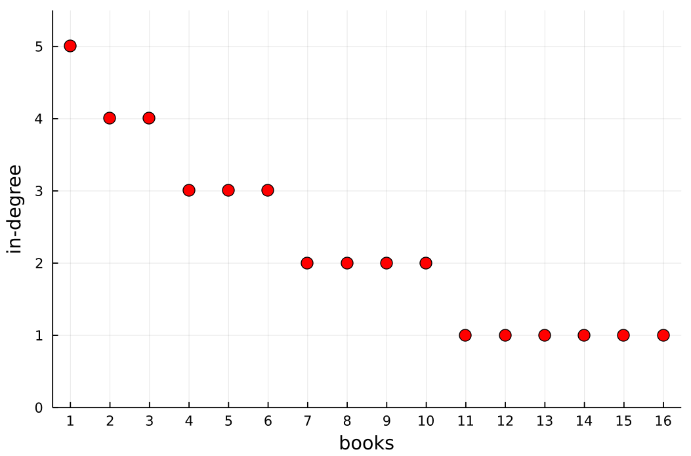
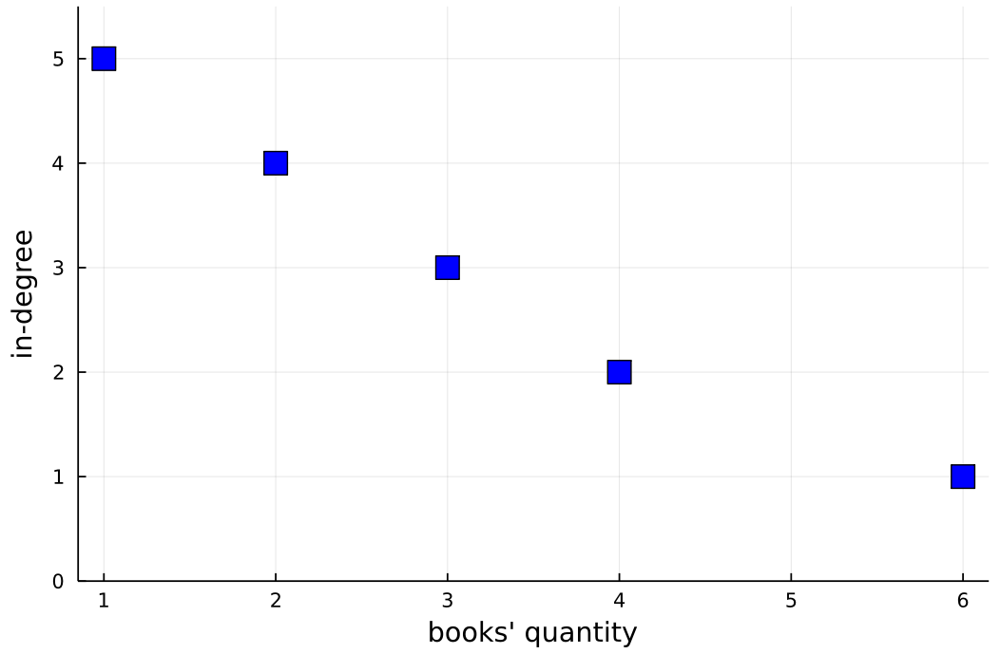
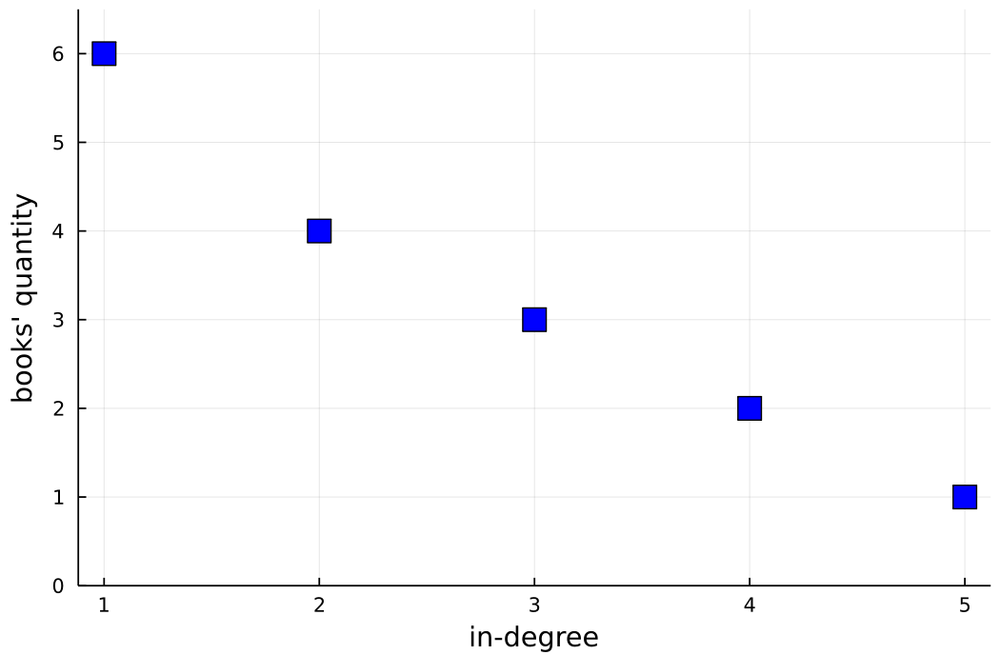

AR - Lesson 02-03
Indice
In questa pagina sono riportati gli appunti delle lezioni 2 e 3, essendo tali lezioni strettamente correllate.
1 Power Law
Nella lezione 1 si è visto che in un Erdős–Rény random graph il numero di nodi che hanno grado esattamente \(k\) decresce esponenzialmente in \(k\). Per comprendere meglio il perché di questo andamento è necessario enunciare (quantomeno in maniera informale e intuitiva) il teorema del limite centrale.
Teorema del limite centrale
Siano \(X_1, X_2, ..., X_n\) una sequenza di \(n\) variabili aleatorie indipendenti e identicamente distribuite, con valore atteso \(\mu\) e varianza \(\sigma^2 < \infty\). Consideriamo la semplice media aritmetica \[ \overline{X}_n \equiv \frac{ X_1 + X_2 + ... + X_n }{n} \] ovviamente con valore atteso che tende a \(\mu\) per \(n \rightarrow \infty\). Il teorema dice che \[ \lim_{n \rightarrow \infty} \sqrt{n} \left( \overline{X}_n - \mu \right) = \mathcal{N}(0, \sigma^2) \] In termini più intuitivi si può interpretare questo enunciato come segue: la somma di tante variabili aleatorie indipendenti e identicamente distribuite si distribuisce come una distribuzione normale intorno al valore atteso.
Figura 1: Esempio distribuzione Normale
Questo teorema è utile a comprendere il fenomeno interessato in quanto il numero di nodi di grado \(k\) in un Erdős–Rény random graph
è proprio una somma di v.a. i.i.d.1, in quanto ogni arco è aggiunto in maniera totalmente indipendete ed equamente
distribuita rispetto agli archi.
Nella realtà però si sono osservati fenomeni sostanzialmente differenti.
Consideriamo il grafo di informazioni del web: possiamo modellarlo tramite un grafo diretto dove ogni nodo rappresenta un pagina, ed esiste
un arco diretto \((a,b)\) se nella pagine \(a\) c'è un iper-link alla pagina \(b\).
In uno studio fatto2 si è osservato che la frazione di nodi con grado entrante \(k\) decresce come \(k^{-c}\) (per qualche costante \(c > 0\)),
e non come \(k^{-k}\).
Una funzione che decresce in questa maniera, ovvero come l'inverso di un polinomio, è detta power law. Un'altra definizione più formale è la seguente:
def. Power Law: siano le costanti \(C > 0\) ed \(\alpha > 1\). Una legge di potenza (o power law) è una funzione prporzionale a \(C x^{-\alpha}\).
Il fatto che in una rete reale (come il web) il numero di nodi di grado alto decresca decisamente molto più lentamente rispetto a quanto ci si aspetta nel modello Erdős–Rény, implica che non è del tutto appropriato considerare l'esistenza di un arco indipendente rispetto agli altri.
1.1 Riconoscere una power law
Non è sempre scontato il riconoscere a vista una funzione power law rispetto a una funzione che decresce esponenzialmente. Per fare ciò è necessario considerare un grafico di tipo log-log, ovvero dove i tick3 degli assi crescono esponenzialmente. All'atto pratico, invece di considerare la funzione \(y = f(x)\), verrà mostrata la funzione \(\log{(y)} = \log{\left( f(x) \right)}\).
Figura 2: Esempio di scala lineare (a sinistra) e scala log-log (a destra)
Come si può notare nell'immagine precedente, è difficile stabilire ad occhio quale delle due funzioni è power law. Invece, con la scala log-log, la funzione power law assume un andamento lineare. Questo perché \(\log{(y)} \approx -c \log{(k)}\).
2 Fenomeno rich-get-richer
Uno dei fenomi più noti nelle reti è il cosidetto fenomeno rich-get-richer. Un esempio reale che spiega questo fenomeno è il seguente:
In questo momento sto scrivendo queste note riguardo la scorsa lezione della professoressa Di Ianni. A un certo punto ho citato il teorema del limite centrale, mettendo un hyper-link alla relativa pagina wikipedia. Il teorema del limite centrale è un teorema che fa parte della "letteratura classica" del calcolo delle probabilità, perciò su internet si possono trovare milioni di pagine che lo descrivono. Già solo cercando col motore di ricerca di google la parola
central limit theoremvengono riportati più di 33 milioni di pagine inerenti. Allora perché ho scelto proprio la pagina di wikipedia, piuttosto che l'ultima delle 33 milioni indicizzate da google? Semplice, ho puntato alla pagina che risultasse "più autorevole", ovvero quella che so essere più indicizzata rispetto all'ultima povera pagina delle 33 milioni.
Perciò, se consideriamo il grado entrante di una pagina web come il numero di hyper-link che la puntano, avremo che sulla
base del precedente ragionamento, il grado della pagina del teorema del limite centrale di wikipedia tenderà sempre di più
a crescere rispetto all'ultima pagina4 indicizzata da google.
Tutto questo implica che nel grafo del web l'esistenza di un arco dipende dall'esistenza di altri archi.
Un altro esempio concreto del fenomeno rich-get-richer avviene nelle reti sociali di un social network:
se una persona è famosa ed ha molti follower tenderà a diventare sempre più popolare.
2.1 Un modello per rich-get-richer
Si vuole descrivere un modello secodno il quale la scelta di un nuovo arco da aggiungere si basa sull'esistenza degli archi già presenti, in modo tale che gli individui tendano a "copiare" il comportamento degli altri. Verrà proposto un processo incrementale di creazione di una rete che rispecchia le seguenti proprietà, simile alla creazione del web:
- i nodi vengono generati in sequenza
- ogni volta che viene inserito un nuovo nodo si decide quali archi inserire sulla base di quelli già presenti
2.1.1 Procedura per la generazione
Fissata una probabilità \(p \in \left[ 0,1 \right]\), vengono eseguite le seguenti operazioni in maniera sequenziale:
- Al tempo \(t=1\) viene inserito il solo nodo \(1\).
- Al tempo \(t=2\) viene inserito il nodo \(2\) e l'arco diretto \((2,1)\).
- Al generico passo \(t = i > 2\) viene inserito il nodo \(i\), scelto u.a.r.5 un nodo \(j \in \left[ i-1 \right]\) tra quelli già esistenti, e
- con probabilità \(p\) viene inserito l'arco diretto \((i,j)\)
- con probabilità \(1-p\) viene inserito l'arco \((i,k)\), dove \(k\) è l'estremo dell'arco \((j,k)\) (ovvero il nodo puntato da \(j\))
n.b. se dovesse capitare di scegliere il nodo \(j=1\), esso viene considerato essere autoreferenziato, ovvere si considera la presenza
dell'arco \((1,1)\) (per questioni di consistenza del processo).
Intuitivamente questo processo genera un grafo che cattura il fenomeno rich-get-richer: è molto più probabile che un nuovo arco inserito
punti a un nodo con grado entrante alto.
Si osservi inoltre che ogni nodo ha esattamente un arco uscente.
2.1.2 Verifica correttezza
Bisogna ora da verificare che il modello precedentemente descritto rispetti una power-law:
ovvero se il numero di nodi con grado \(k\) decresce come l'inversa di un polinomio in \(k\).
Per prima cosa definiamo la v.a. binaria \(\delta_{i,j}\) che vale 1 se esiste l'arco \((i,j)\), 0 altrimenti \[ \delta_{i,j} = \begin{cases} 1 &\mbox{se } (i,j) \in E\\ 0 &\mbox{altrimenti} \end{cases} \;\;\; \forall i > j \] Perciò la probabilità che esista un arco diretto \((i,j)\) può essere calcolata come segue
\begin{align*} \mathcal{P}(\delta_{i,j} = 1) &= p \cdot \mathcal{P}\left( \mbox{viene scleto } j \right) + (1-p) \cdot \mathcal{P}\left( \mbox{scelgo un nodo } h : \delta_{h,j} = 1 \right)\\ &= \frac{p}{i-1} + (1-p)\mathcal{P} \Big( \bigcup_{h < i : (h,j) \in E} \mbox{viene scleto } h \Big)\\ \textbf{(1)}&= \frac{p}{i-1} + (1-p)\sum_{h < i : (h,j) \in E} \mathcal{P} \left( \mbox{viene scleto } h \right)\\ \textbf{(2)}&= \frac{p}{i-1} + \frac{(1-p)}{i-1} \sum_{h < i : (h,j) \in E} 1\\ &= \frac{p}{i-1} + \frac{(1-p)}{i-1} \sum_{1 \leq h < i} \delta_{h,j} \end{align*}dove:
- (1) la probabilità dell'unione di eventi disgiunti è pari alla somma delle loro probabilità.
- (2) la probabilità di scegliere un nodo \(h < i\) è equamente distribuita come \(\frac{1}{i-1}\).
Facciamo una considerazione: dato che ogni nodo \(i > 2\) ha esattamente un arco uscente, deve essere necessariamente vero che \[ \mathcal{P}(\exists j < i : (i,j) \in E ) = 1 \] Infatti \[ \mathcal{P}(\exists j < i : (i,j) \in E ) = \sum_{1 \leq j < i} \mathcal{P}( (i,j) \in E ) \] Questo si può dimostrare per induzione su \(i\):
- per \(i = 2\) avremo che \[ \sum_{1 \leq j < 2} \mathcal{P}( (2,j) \in E ) = \mathcal{P}( (2,1) \in E ) = 1 \] e questo è vero per costruzione.
supponiamo sia vero per \(i \leq k - 1\), per \(i = k\) avremo che
\begin{align*} \sum_{1 \leq j < i} \mathcal{P}( (i,j) \in E ) &= \sum_{1 \leq j < i} \left[ \frac{p}{i-1} + \frac{(1-p)}{i-1} \sum_{1 \leq h < i} \delta_{h,j} \right]\\ &= \sum_{1 \leq j < i} \frac{p}{i-1} + \sum_{1 \leq j < i} \Big( \frac{(1-p)}{i-1} \sum_{1 \leq h < i} \delta_{h,j} \Big) \;\;\; \mbox{spezzo la serie}\\ &= \frac{(i-1)p}{i-1} + \frac{(1-p)}{i-1} \sum_{1 \leq j < i} \sum_{1 \leq h < i} \delta_{h,j}\\ &= p + \frac{(1-p)}{i-1} \sum_{1 \leq h < i} \underbrace{ \sum_{1 \leq j < i} \delta_{h,j} }_{h \scriptsize{\mbox{ ha 1 solo arco uscente}}} \;\;\; \mbox{inverto le due serie}\\ &= p + \frac{(1-p)}{i-1} \sum_{1 \leq h < i} 1\\ &= p + \frac{(1-p)}{i-1}(i-1)\\ &= p + (1 - p) = 1 \end{align*}
Siamo ora pronti a verificare la reale presenza di una power law. Questo procedimento avverrà in 4 fase:
- Definizione di una legge aleatoria che esprima la variazione del grado (entrante) di un nodo nel tempo.
- Approssimazione deterministica e continua della legge.
- Risoluzione di una equazione differenziale che calcola il valore di tale approssimazione.
- Individuazione di una power law.
- Legge aleatoria
Sia la v.a. discreta \(D_j(t)\) che esprima il grado entrante del nodo \(j\) al tempo \(t\) del processo di generazione del grafo. Si osservi che \(D_j(t)\) è difinita solamente per \(t \geq j\), e che \(D_j(j) = 0\) per ogni \(j\) (per costruzione).
Ritornando alla variazione del grado entrante nel tempo, possiamo dire che dal tempo \(t\) al tempo \(t+1\) esso potrà essere aumentato di al più una unità. Perciò possiamo esprimere la variazione nel tempo del grado entrante del nodo \(j\) come la differenza \(D_j(t+1) - D_j(t)\).
Possiamo quindi calcolare la probabilità che il grado del nodo \(j\) aumenti di 1 come
\begin{align*} \mathcal{P}(D_j(t+1) - D_j(t) = 1) &= \mathcal{P}(\delta_{t+1, j} = 1)\\ &= \frac{p}{(t+1)-1} + \frac{(1-p)}{(t+1)-1} \sum_{1 \leq h < (t+1)} \delta_{h,j}\\ &= \frac{p}{t} + \frac{(1-p)}{t}D_j(t) \end{align*} - Approssimazione deterministica e continua
Stabilita la legge \(\mathcal{P}(D_j(t+1) - D_j(t) = 1) = \frac{p}{t} + \frac{(1-p)}{t}D_j(t)\), la si vuole approssimare. Questo perché generalmente le leggi discrete e probabilistiche sono troppo complesse da analizzare.
Per prima cosa si può rimuovere il fattore aleatorio e renderla deterministica con la seguente approssimazione
\begin{cases} X_j(j) = 0\\ \\ X_j(t+1) - X_j(t) = \frac{p}{t} + \frac{(1-p)}{t}X_j(t) \end{cases}\(\forall t \geq j\).
La seconda approssimazione da fare è passare dal discreto al continuo
\begin{cases} x_j(j) = 0\\ \\ \frac{d}{dt}x_j(t) = \frac{p}{t} + \frac{(1-p)}{t}x_j(t) \end{cases}Non è detto che questa approssimazione si avvicini alla legge reale. Notare in fine che la seconda equazione del sistema è una equazione differenziale6.
- Risoluzione equazione differenziale
Si vuole risolvere la seguente eq. differenziale \(\frac{d}{dt}x_j(t) = \frac{p}{t} + \frac{(1-p)}{t}x_j(t)\). Per prima cosa si può raccogliere il fattore \(1/t\) \[ \frac{d}{dt}x_j(t) = \frac{1}{t} \left[ p + (1-p)x_j(t) \right] \] e poi dividendo entrambi i membri per \(\left[ p + (1-p)x_j(t) \right]\) \[ \frac{1}{p + (1-p)x_j(t)} \frac{d}{dt}x_j(t) = \frac{1}{t} \]
A questo punto si può procedere integrando in \(dt\) \[ \int \frac{1}{p + (1-p)x_j(t)} \frac{d x_j(t)}{dt} \, dt = \int \frac{dt}{t}\\ \\ \int \frac{d x_j(t)}{p + (1-p)x_j(t)} = \int \frac{dt}{t} \] Moltiplichiamo entrambi i membri per \((1-p)\) \[ \int \frac{(1-p) d x_j(t)}{p + (1-p)x_j(t)} = (1-p) \int \frac{dt}{t} \] Poniamo poi \(y = p + (1-p)x_j(t)\). La derivata di \(y\) sarà \[ y' = \frac{dy}{dx_j(t)} = (1-p)\] ovvero il numeratore della frazione nel primo integrale. \[ \int \frac{y'}{y} \, dx_j(t) = (1-p) \int \frac{dt}{t} \] Il quale si può semplificare come \[ \int \frac{y'}{y} \, dx_j(t) = \int \frac{\frac{dy}{dx_j(t)}}{y} \, dx_j(t) = \int \frac{dy}{y} \]
Adesso che è rimasto solo il fattore \(y\) al primo membro, risostituiamo col valore origianle \[ \int \frac{dy}{y} = \int \frac{d \left[p + (1-p) x_j(t) \right]}{p + (1-p)x_j(t)} = (1-p) \int \frac{dt}{t} \] A questo punto è facile integrare, ottenendo che \[ \ln{\left( p + (1-p) x_j(t) \right)} = (1-p) \ln{(t)} + c \] Da cui poi elevando a potenza \[ p + (1-p) x_j(t) = t^{1-p} \cdot e^c = C \cdot t^{1-p} \]
Per calcolare la costante \(C\) basta considerare la condizione iniziale per cui \(x_j(j) = 0\), ottenendo che \[ p = C \cdot j^{1-p} \implies C = \frac{p}{ j^{(1-p)} } \]
Concludendo che \[ p + (1-p) x_j(t) = C \cdot t^{1-p}\\ p + (1-p) x_j(t) = t^{1-p} \cdot e^c = \frac{p}{ j^{(1-p)} } \cdot t^{1-p} = p \left( \frac{t}{j} \right)^{1-p}\\ (1-p) x_j(t) = p \left[ \left( \frac{t}{j} \right)^{1-p} - 1 \right]\\ x_j(t) = \frac{p}{1-p} \left[ \left( \frac{t}{j} \right)^{1-p} - 1 \right] \]
- Individuazione Power Law
Dati quindi dei valori di \(k\) e \(t\), cerchiamo di calcolare quanto vale la frazione di nodi che al tempo \(t\) ha esattamente grado entrante \(k\). Per fare ciò iniziamo col definire l'insieme \(A_t(k) = \lbrace j \leq t : x_j(t) \geq k \rbrace\), ovvero l'insieme dei nodi che hanno grado entrante almeno \(k\) (secondo la nostra approssimazione continua e deterministica). Perciò la frazione dei nodi con grado \(k\) sarà la differenza tra il numero di nodi con grado almeno \(k\) e il numero di nodi con grado almeno \(k+1\), fratto il numero di nodi inseriti fino al tempo \(t\) (che ovviamente equivale a \(t\)). \[ \frac{1}{t} | A_t(k) - A_t(k+1) | = \frac{1}{t} \left( |A_t(k)| + |A_t(k+1)| \right) \]
Per definizione quindi un nodo \(j\) appartiene all'insieme \(A_t(k)\) se e solo se \(j \leq t\) e \(x_j(t) \leq k\). Ma sappiamo dalla precedente eq. differenziale che \(x_j(t) = \frac{p}{1-p} \left[ \left( \frac{t}{j} \right)^{1-p} - 1 \right]\), perciò \(x_j(t) \geq k\) se e solo se \(\frac{p}{1-p} \left[ \left( \frac{t}{j} \right)^{1-p} - 1 \right] \geq k\).
Risolvendo questa disequazione per trovere i valori di \(j\) che rispettano la disuguaglianza \[ \frac{p}{1-p} \left[ \left( \frac{t}{j} \right)^{1-p} - 1 \right] \geq k\\ \left( \frac{t}{j} \right)^{1-p} - 1 \geq k\frac{1-p}{p}\\ \left( \frac{t}{j} \right)^{1-p} \geq k\frac{1-p}{p} + 1\\ \frac{t}{j} \geq \left[ k\frac{1-p}{p} + 1 \right]^{ \frac{1}{1-p} }\\ j \leq t \left[ k \frac{1-p}{p} + 1 \right]^{ - \frac{1}{1-p} } \]
Si osservi che poichè \(k \frac{1-p}{p} + 1\) è maggiore di 1 e l'esponente \(- \frac{1}{1-p}\) è minore di 0, è vero che \[ \left[ k \frac{1-p}{p} + 1 \right]^{ - \frac{1}{1-p} } \leq 1 \implies t \left[ k \frac{1-p}{p} + 1 \right]^{ - \frac{1}{1-p} } \leq t \]
Riformulando l'affermazione di prima, il nodo \(j\) appartiene all'insieme \(A_t(k)\) se e soltanto se \(j \leq t \left[ k \frac{1-p}{p} + 1 \right]^{ - \frac{1}{1-p} }\).
Perciò possiamo riformulare anche la definizione dell'insieme \(A_t(k)\) come \[ A_t(k) := \bigg\{ j \leq t \left[ k \frac{1-p}{p} + 1 \right]^{ - \frac{1}{1-p} } \bigg\} \] il quale avrà cardinalità esattamente \[ |A_t(k)| = t \left[ k \frac{1-p}{p} + 1 \right]^{ - \frac{1}{1-p} } \]
Per comodità definiamo la funzione \(F(k) = \left[ k \frac{1-p}{p} + 1 \right]^{ - \frac{1}{1-p} }\). Perciò la quantità che vogliamo calcolare al possiamo riscrivere come \[ \frac{1}{t} \left( |A_t(k)| + |A_t(k+1)| \right) = F(k) - F(k+1) = f(k) \]
A questo punto possiamo approssimare \(f(k)\) come la derivata \(-\frac{d}{dk}F(k)\). Se il segno
-confonde, con la seguente equazione apparirà più chiaro \[ F(k) - F(k+1) = \frac{(-1)}{(-1)} \left( F(k) - F(k+1) \right) = - \left( - \frac{ F(k) - F(k+1) }{1} \right) = - \left( \frac{ F(k+1) - F(k) }{1} \right) \approx -\frac{d}{dk}F(k) \]Assodata questa approssimazione, si può procedere derivando7 in \(k\).
\begin{align*} f(k) &\approx -\frac{d}{dk} F(k)\\ &= - \left( \frac{1}{1 - p} \right) \cdot \left( \frac{1-p}{p} \right) \cdot \left[ k \frac{1-p}{p} + 1 \right]^{ - \frac{1}{1-p} - 1 }\\ &= \frac{1}{p} \cdot \left[ k \frac{1-p}{p} + 1 \right]^{ - \left( 1 + \frac{1}{1-p} \right) } \end{align*}Tale funzione è l'inversa di un polinomio in \(k\) con esponente massimo \(\left( 1 + \frac{1}{1-p} \right)\), e in quanto tale è una power-law.
2.1.3 Osservazioni sull'analisi
In realtà l'approssimazione continua e deterministica fatta per analizzare la correttezza della procedura di generazione del modello potrebbe
discostarsi molto dal valore effettivo, ovvero quello descritto in maniera discreta e probabilistica.
In realtà è stato dimostrato8 che w.h.p.9 nel modello di rete per rich-get-richer proposto, la frazione di nodi
con grado \(k\) è proporzionale a \(k^{- \left(1 + \frac{1}{1-p} \right)}\).
3 Impredicibilità della popolarità
Da come è stato definito il modello per rich-get-richer in precedenza, viene subito da pensare che la distribuzione dei gradi
dipende fortemente dalla fase iniziale del processo di generazione.
C'è un esperimento di Salganik-Dodds-Watts del 2006 che mostra quanto è importante e instabile la fase iniziale.
Venne creato un sito era possibile ascoltare e scaricare delle canzoni tra circa 50 proposte. C'erano inoltre 8 playlist, ognunga delle quali contente tutte le canzoni del sito. Per ogni playlist, veniva mostrato un contatore dei download delle canzoni internamente alla playlist: se la canzone
Xveniva scaricata dalla playlistA, quel download veniva contato e riportato solo perA, e non per un'altra playlistB.
Quando chiunque entrava nel sito, veniva riportato automaticamente a una playlist totalmente a caso.
Ovviamente, più una canzone aveva l'indice di download alto, più veniva ascoltata e scaricata, in quantola gente è influenzata dal parere della massa. Interessante invece osservare come si sono evoluti i contatori di download nel tempo. Dato che inizialmente erano tutti posti a 0, e dato che le persone venivano rendirizzate alle playlist totalmente a caso, si potrebbe pensare che col tempo più o meno tutte le playlist avessero una stessa classifica dei download. In realtà ogni palylist aveva un classifica totalmente differente.
Questo è dovuto al fatto che la popolarità di una canzone in una playlist piuttosto che in un altra dipendeva da come si evolvevano le fasi iniziali.
Ciò che mostra questo esperimento è che il processo che conduce alla popolarità è fortemente sensibile alle condizioni iniziali. Perciò si potrebbe inizialmente sfruttare il feedback per cercare di influenzare la popolarità di una entità della rete.
4 La lunga coda
La distribuzione della popolarità dei nodi di una rete può avere importanti effetti su attività commerciali. Per esempio consideriamo un sito di vendita di libri online. Il gestore del sito potrebbe chiedersi:
è più conveniente vendere tante copie di un pochi libri molto popolari, oppure è meglio vendere poche copie ma di tantissimi libri poco popolari?
Anche in questo caso ci stiamo interessando alla popolarità, però non vogliamo sapere quanti nodi hanno grado \(k\) (ovvero sono popolari) bensì vogliamo
sapere se il volume di affare di tanti libri poco popolari è paragonabile a quello di pochi libri molto popolari.
Come prima cosa enumeriamo i libri a disposizione in un ordine non crescente di popolarità. Ovvero, siano i libri \(\{ 1, ..., n \}\) disponibili nel magazzino online, assumiamo che essi sono ordinati in modo tale che la popolarità (o grado entrante) \(\delta(i)\) del libro \(i\) è non maggiore di quella di \(i+1\). \[ \delta(1) \geq \delta(2) \geq ... \geq \delta(n) \]

A questo punto, assumiamo che il numero di nodi avente una certa popolarità aumenti al diminurie della popolairtà.
Ovvero i il numero di nodi con popolarità 100 sarà minore di quelli con popolarità 99, che a sua volta sarà pià piccolo di quelli con popolairtà 98, ecc…
Sotto questa assunzione possiamo raggrupare i nodi con la stessa popolarità in un unico punto nel grafico, ottenendo così il seguente

Osserviamo che invertendo gli assi, otteniamo nuovamente il grafico che ci dice il numero di nodi che hanno un determinato grado entrante (ovvero ciò che abbiamo analizzato in queste lezioni).

Figura 5: Grafico con assi invertite.
Indichiamo formalmente con \(\#(k) = n\) la funzione che data la popolarità \(k\) ci dice il numero di libri \(n\) con tale probabilità, come quello mostrato in figura 5.
Quello che interessa a noi è identificare la funzione che descrive il grafico 4, ovvero la funzione \(\#^-1(n) = k\) che dato un numero di libri \(n\) aventi la stessa popolarità ci dice la loro popolarità esatta \(k\).
Sempre ammettendo che la funzione \(\#(\cdot)\) sia invertibile.
È possibile dimostrare che se la funzione \(\f(\cdot)\) che esprime la frazione di libri (nodi) che hanno popolarità (grado entrante) \(k\) è una PowerLaw,
allora anche la funzione \(\#(\cdot)\) (che invece esprime il numero esatto, e non una frazione) è una PowerLaw.
Ovvero
\[
n = \#(k) \approx k^{-c}
\]
per qualche \(c > 0\).
Da essa è poi facile ricavarne l'inversa \[ k = \#^-1(n) \approx n^{-1/c} \]
Se quindi \(k \approx n^{-1/c}\), dove \(k\) è un livello di popolarità ed \(n\) è il numero di nodi con tale popolarità, possiamo osservare graficamente che \(k\) decresce mooolto lentamente.

Come possiamo vedere dalla Figura 6, la popolarità \(k\) al crescere del numero dei libri decresce molto lentamente.
Si crea appunto una lunga coda.
Dato che in genere il volume di affari ricavabile dalla vendita di un gruppo di prodotti è proporzionale alla loro popolairtà,
l'area di quelli poco popolari, ovvero l'area sotto la lunga coda, è tutt'altro che trascurabile.
4.1 Gli effeti del Web-Search
Ci chiediamo ora se l'utilizzo dei motori di ricerca su internet hanno un impatto su fenomeno del rich-get-richer.
Da una parte il fenomeno è amplificato, in quanto i motori di ricerca tendono a proproti come primi risultati le pagine più "famose" (inerentemente alla tua ricerca).
D'altra parte l'effetto è mitigato, in quanto la ricerca è soggetta a una "scrematura" delle pagine in base alle parole usate per la ricerca.
Infatti l'utilizzo di parole inusuali possono poartare come risultato della ricerca pagine che non sono "famose".
Per quello visto prima, un venditore è interessato a promuovere i suoi prodotti "di nicchia" (quelli meno popolari), appunto per cercare di ricavare
il guadagno dalla lunga coda.
Per questo motivo i venditori online cercano sempre di rendirizzare gli utenti verso i prodotti "in coda", per esempio tramite l'utilizzo del cosidetto recommendation system
i quali invitano gli utenti a visitare le pagine meno popolari.
In poche parole gli strumenti di web-search sono un esempio di utilizzo degli effetti feedback, i quali a volte amplificano l'effetto rich-get-richer, mentre altre volte lo mitigano.
Note a piè di pagina:
i.i.d. sta per indipendenti e identicamente distribuite.
[Broder et al., 2000]
per tick si intende gli indici del grafico che vengono segnati sugli assi. Generalmente si è abituati a vedere dei tick che crescono in maniera lineare \([0, 1, 2, ...]\), però spesso è necessario visualizzare l'asse secodno una scala differete, per esempio che cresce in maniera quadratica \([0, 1, 4, 9, 16, ...]\).
magari quell'ultima pagina delle 33 milioni è la migliore di tutte, ma probabilmente non lo saprò mai finché non salirà tra le prime 5 o 6 indicizzate (è difficile che io vada oltre).
u.r.a. sta per uniformemente a caso
una eq. differenziale è una equazione che lega una funzione alla sua derivata, del tipo \(f'(x) = a \cdot f(x) + b\)
si ricordi che la derivata di una funzione del tipo \(y = \left[ h(x) \right]^n\) è pari a \(y' = n \cdot \left[ h(x) \right]^{n-1} \cdot h'(x)\).
[Bollobas, Riordan - 2005]
with high probability, ovvero con probabilità almeno \(1 - \left( \frac{1}{n} \right)^{\Omega(1)}\)